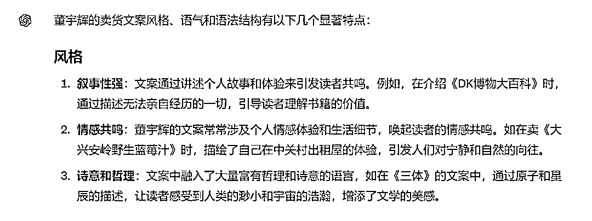

来源：https://balfcirt91j.feishu.cn/docx/ETw9dnfutoUfyxxVGiLcdsetn0e
董宇辉，直播卖货界的一股清流，不再是咋咋呼呼、制造紧迫感的叫卖：“还有最后3个99元的名额，3、2、1开拍”，而是和你聊人生、聊远方、聊理想，把产品背后的人文、情怀，用诗情画意的方式和你说出来，直播间没有促销的感觉，给人感觉是在听优美的散文。
你会惊讶地发现，原来销售还可以这样有趣、有温度。
虽然没有一个字说“快来买”，但是带货效果却出奇地好，短短几秒钟时间，产品就能卖几万单，一本非常冷门的书，一晚上可以卖几十万册，这种火爆的场面甚至让商家都紧张起来，怕备货不够。他的直播带货文案，到底有什么魅力呢？我们先来看看案例：
我们无法真正去踏上每一片土地，无法牵孩子的手去看每一处风景；无法听每一个诗人讲他们的故事，无法听每个科学家讲他的发现，我们的生命太短暂了，没有办法去体会这一切，但请记得，你一定可以找到一个无所事事的下午，就像你好多年前放学后无所事事的下午一样，陪着孩子翻着一本书，聊一些童年成长的故事
解析：这一段用了大量的排比句：“无法……无法……让遗憾的情感得到了放大”
那天第一批我们自己吃的样品到了，我喝完一瓶，然后坐在中关村的出租屋里燥热，楼下吵闹，北四环的车流从来没有因为我的忧伤或者是兴奋而停止过，楼下还时常在夜里打电话争吵。但那一刻我坐在中关村租住的小房间里头，我的灵魂已飘向远方。是的，遥远的北方，大兴安岭的原始森林里沾着露水月光下，人们起舞饮酒，畅谈驯鹿脖子上的铃铛，偶尔作响，萨满穿着精致的衣服，充满力量的起舞，那里的孩子自由而健康，右下角想要的自己去拍
解析：这一段，描写了大兴安岭细腻的场景，让人产生向往
我们也在努力的活着，有贷款、有房租、有压力、有爱的人，有脆弱的感情。
大概就在10天前我们还在苦苦挣扎，那天晚上有1300人陪我聊到天亮，我说我们是朋友对吗？
我们能聊聊天吗？你们为什么睡不着”？当时我突然才知道的有那么多人在夜里，原来跟我一样辗转难眠，
有没考上研究生还没有找到工作在家里焦急的孩子，有期望在大城市打拼的孩子能回来看看自己的老人，有孩子尿床哭醒了自己收拾完一切坐在客厅里想喝一杯水冷静冷静的母亲，
有半夜开着车回来大半夜还在路上的中年人。——众生相。
前天晚上我跟宋老师播完之后，我俩走到楼下，有几个人在天桥底下睡觉，前几天下那么大的雨，我其实特别想帮他们，但我又不好意思打扰他们。——那才是众生相。
所以什么叫做《藏在地图里的中国历史》？城堡会泯灭在长河中，英雄会老去，美人会迟暮，你我的故事终将化为一炬，但是平凡的人会给我最多感动。
我更多的精神力量不是从那些大家听起来很壮阔的故事中找的，反而是我身边真实的一个个朋友们，七情六欲，五谷杂粮，但可爱如你我。
我希望六月的阳光下，你我光明磊落的站着，大大方方，热爱生活，慷慨、乐观、自信。有困难是对的，因为月有阴晴圆缺，人有悲欢离合嘛，苏轼都给你说了。
解析：这本书主要是讲各种历史人物故事的，而这一段文案，把历史的故事做了升华，营造一种情感共鸣，大家都在努力地活着，每个人都在演绎自己的故事。
从以上内容，可以推断出，董宇辉文案的结构一般是这样的：
比如DK博物大百科，是带孩子看遍世界的物种，而目标用户是家长，家长目前工作忙，是无法带孩子走遍世界每一个角落的
比如在蓝莓汁和历史故事书籍的带货文案中，都加入了董宇辉的个人体验
不提产品，不提功效，而是用美好、具体的场景来描写。
有了这样的分析，接下来，我们可以让ChatGPT为我们干活了。
我将采用ChatGPT的新版本4o来撰写董宇辉式文案。
而这段文案，我采用的产品案例是某位学员给我提供的学习力培训产品。
产品信息
提升孩子学习力的课程，通过培训孩子十八种记忆方法，十三种专注力训练方法，使他能更专注地投入学习、增强记忆力，更容易学会知识，从而使得成绩提升。
目标用户：初中生的家长
具体的命令如下：以下是董宇辉的卖货文案：XXXXXX,请你分析董宇辉卖货文案的风格、语气、语法结构

如上图，我把分析出来的文案语气、风格、语法结构定义为类型A，再把步骤告诉它，让它模仿类型A来撰写文案
下面来看输出的过程
怎么样，是不是感觉很棒呢？赶紧用你家的产品试试吧！